簡易レール演奏補助 - SMM2
周期生成, 集音配置生成などいろいろ。(最終更新: 23/08/31)
BPMと音符間隔
1拍(=4分音符)の長さから各音符とBPMを計算。
1拍の長さ(f):
BPM:
| 符(拍) | 記号 | 長さ(f) |
| 1分(4) | 𝅝 | |
| 付点2分(3) | 𝅗𝅥. | |
| 2分(2) | 𝅗𝅥 | |
| 付点4分(1.5) | 𝅘𝅥. | |
| 4分(1) | 𝅘𝅥 | |
| 付点8分(0.75) | 𝅘𝅥𝅮. | |
| 8分(0.5) | 𝅘𝅥𝅮 | |
| 16分(0.25) | 𝅘𝅥𝅯 | |
| 3分(1.33) | 𝅗𝅥𝅗𝅥𝅗𝅥 | |
| 6分(0.67) | 𝅘𝅥𝅘𝅥𝅘𝅥 | |
| 12分(0.33) | 𝅘𝅥𝅮𝅘𝅥𝅮𝅘𝅥𝅮 | |
・3分,6分,12分は 3連2分,3連4分,3連8分 と同義。
・小数第3位を四捨五入。
・下の3つは記号の1つ分の長さ。
(記号はUnicodeの関係で表示されないかも？)
レールループ生成
作りたいレールループを作成します。
(f):
( 直線, 斜め, 曲線, うるう距離 )の本数。

レール周期確認
各レール本数で周期を確認できます。
:
直線(本):
斜め(本):
曲線(本):
うるう距離(本):
周期(f):
表計算
内容は保存されません。
読み込みタイプ:
集音速度(f/b):
下向き、右向きを正とする。
着線パターン:
4分符長(f):
BPM:
| 番号 | 01 | 02 | 03 | 04 | 05 | 06 | 07 | 08 | 09 | 10 | 11 | 12 | 13 | 14 | 15 | 16 | 17 | 18 | 19 | 20 | 21 | 22 | 23 | 24 | 25 | 26 | 27 | 28 | 29 | 30 | 31 | 32 |
| メモ | | | | | | | | | | | | | | | | | | | | | | | | | | | | | | | | |
| n分符 | | | | | | | | | | | | | | | | | | | | | | | | | | | | | | | | |
| 符長(f) | | | | | | | | | | | | | | | | | | | | | | | | | | | | | | | | |
| xズレ(f) | 0 | | | | | | | | | | | | | | | | | | | | | | | | | | | | | | | |
| yズレ(b) | 0 | | | | | | | | | | | | | | | | | | | | | | | | | | | | | | | |
| 結果(f) | | | | | | | | | | | | | | | | | | | | | | | | | | | | | | | | |
| 高さ(b) | | | | | | | | | | | | | | | | | | | | | | | | | | | | | | | | |
| 配置 | | | | | | | | | | | | | | | | | | | | | | | | | | | | | | | | |
基準遅延(f):
基準着線レール間(b):
結果が配置可能かどうかを検証。(◎一致, ○誤差, △もっと誤差, ×不可)
終端速度を使用(8b以上あける)。
縦集音配置生成
縦レールによる集音(ぜんまいメソッド)の配置を探します。
狙いの値(f):
着線レールとの距離(b):
終端速度を使用(8b以上あける)。
( 遅延 / 下向きの長さ / 表記 )。
一致:
誤差:
もっと誤差:
説明
 分からないところ等あったら言ってください。
分からないところ等あったら言ってください。


表と縦集音配置生成について
解説動画(より詳細なのでこっちを見た方がいい)
0. SMM内でメロディ通りに左から右へレール音符を配置し、適当な高さに着線レールをひく。
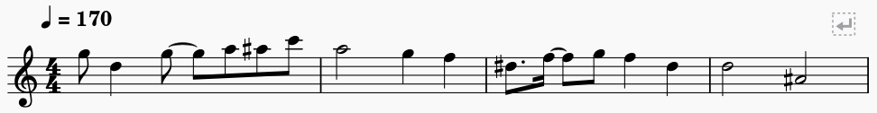
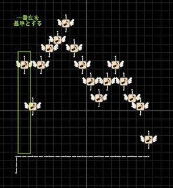
1. 作りたいメロディのBPM(4分符長)を入力。
2. 読み込みタイプと、画像を参照して着線パターンを選択。
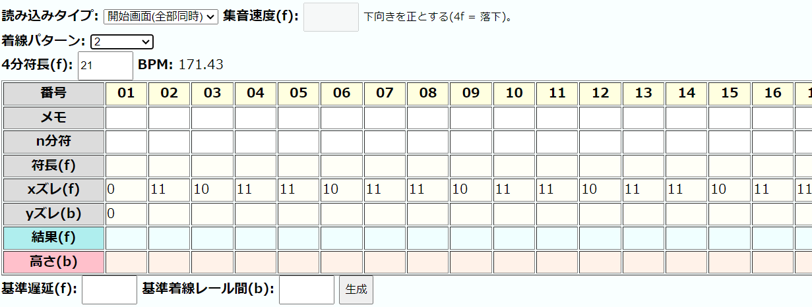
3. 音符の長さをどちらかの方法で入力(一番最後の音符は入力しなくてもよい)。
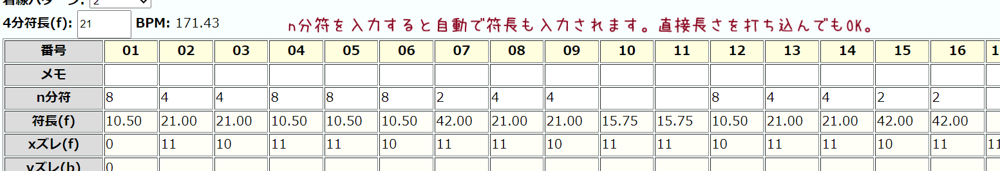
4. (落下集音ならばスキップ) SMM2内を参照して、yズレを入力。
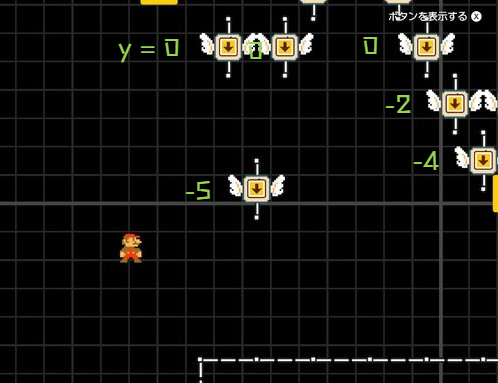
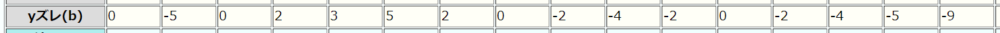
5. 基準となる音符の着線レールとの距離を入力。
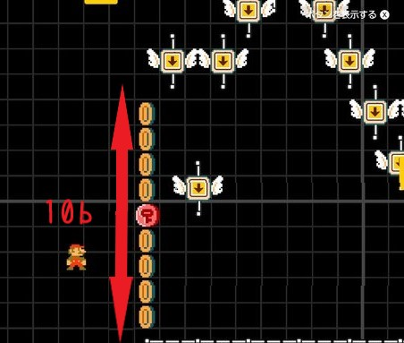
6. 基準遅延を入力。30 ~ 120ぐらいで調整する。小さいほどスペースと時間を節約できるが、配線が見つかりづらくなる。
7.生成ボタンを押し、出てきた下2つの値を縦配置生成に入れる。
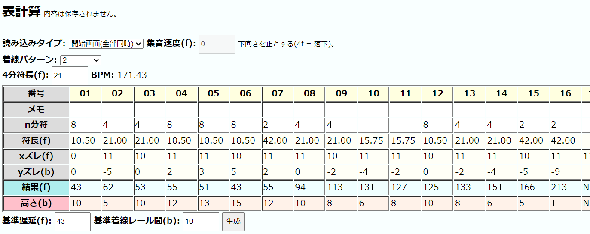
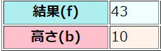
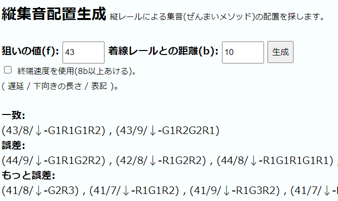
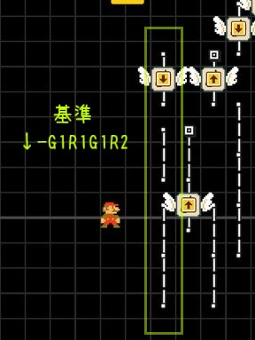
8.SMM内で配置し、完成！
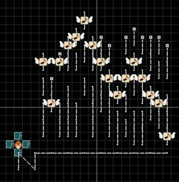
9.生成された配置は正確でない場合があるので、聞いて手直しするといいかも。
雑記
て～すと
間違い、改善点、こんなの追加してほしい～ などあれば。いい感じの機能は追加していきます。
縦ギャップの値をある程度集めたけど色々合致しない...
座標依存含めて要検証。
【用語と単位集】
・f, フレーム ... 1/60秒, SMM2の時間最小単位。時間という意味で1f = 1cuである。
・cu, うるう距離 ... 羽あり音符などで直線3レール曲がらずに進んだ時に発生するズレ。レール1本を整数fで表せないために小数部分が蓄積した結果周期的に表れるものと考えられる。時間、長さ、速さとして用いられる。
・b, ブロック幅 ... SMM2の1マス。隣接するブロック間の距離は1bとなる。
・G, ギャップ ... 縦断線レールなどの距離または遅延。
・R, レール ... レールの本数。ここでは直線レールを指す。
・A, アセレレーション ... 着線レールまでの距離で終端速度に達していないときの加速。
・終端速度 ... マリオやレール音符が自由落下し、十分に加速しきった速度。1bあたり4f。落下集音はこの速度でマリオが落下していくものと考える。
・レール音符の速度 ... 羽ありは直線21f, 斜め30f, 曲線36fで通過する。直線レールを曲がらずにまっすぐ進む場合、3b/32f。
・集音 ... レール音符を集めること。また、集音レールはレール音符を集めるためのレール。
・着線 ... レール音符が落下などして、集音レールに乗ること。
・(自由)落下集音 ... マリオが自由落下し、一定の速度で集音すること。この時レール音符は、マリオと落下速度が同じため水平に一列に並ぶ。
ここで定めたものは独自のものであり、ゲーム上正しくない、また、他の人には伝わらない可能性があります。
参考文献・資料
おいしくいただいております(敬称略)。
ぜんまいメソッド解説
レール演奏解説
レールループ生成
(C)opyRight 2023 いっぱい